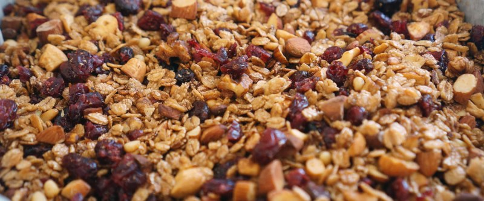

Гранола

Заранее помыть и подсушить 180 гр. сухофруктов (отлично подходит клюква, можно и курагу и любые другие по вкусу), порезать.
Разогреть духовку до 160 градусов. 180 гр. орехов (в любых сочетаниях миндаль, фундук, кешью, грецкие) перемолоть до небольших кусочков.
Далее все ингридиенты отправить в миску: 300 гр. овсяных хлопьев, орехи, сухофрукты, 2 ст.л. семян чиа, 2 ст.л. корицы, соль, перец, 2 ст.л. кокосового масла, 75 мл. кленового сиропа. Все хорошенько перемешать руками.
Противень застелить пергаментной бумагой, выложить ровным слоем. Отправить в духовку на 30 минут. Следить, пока не начнет румяниться. Достать, дать остыть, переложить в стеклянную банку.
Подавать с молоком, йогуртом.